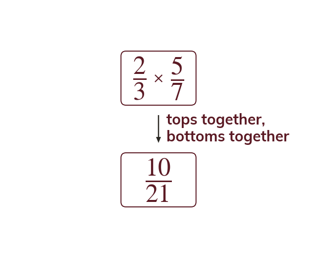
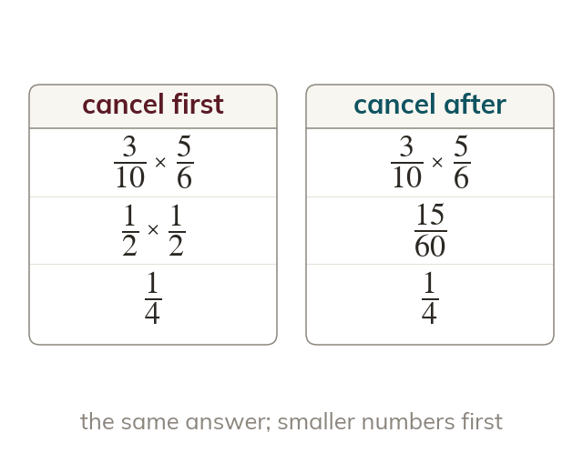
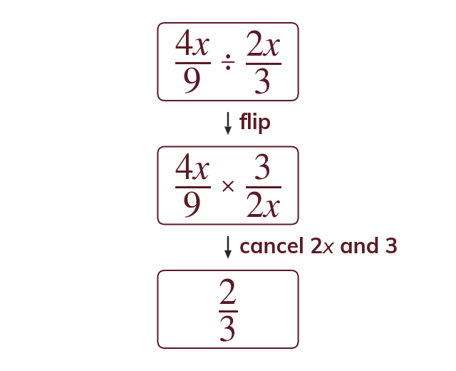

Multiply straight across
Multiply the numerators together and the denominators together. Cancel a common factor first if one is visible, across either fraction.
Multiplying and dividing algebraic fractions follow the same two rules as numerical ones: multiply straight across, and turn a division into a multiplication by flipping the second fraction.
Work down the page at your own pace. Write every answer in your book first, then click to check it.
Read each card, then follow the worked examples one step at a time.

Multiply the numerators together and the denominators together. Cancel a common factor first if one is visible, across either fraction.

Cancelling first keeps the numbers small. Cancelling after gives the same answer, with bigger numbers.
Pick an answer. If it's wrong, the feedback tells you which mistake it was.
Read each card, then follow the worked examples one step at a time.
Dividing by a fraction means multiplying by its reciprocal. The reciprocal is the fraction turned upside down.

Once the second fraction is flipped, cancel exactly as in a multiplication.
Pick an answer. If it's wrong, the feedback tells you which mistake it was.
Finished? Next lesson: 9.12.3 Adding and Subtracting Fractions.
Log in, then search for a code to practise that skill.
Videos, worksheets and more on each part of this lesson.